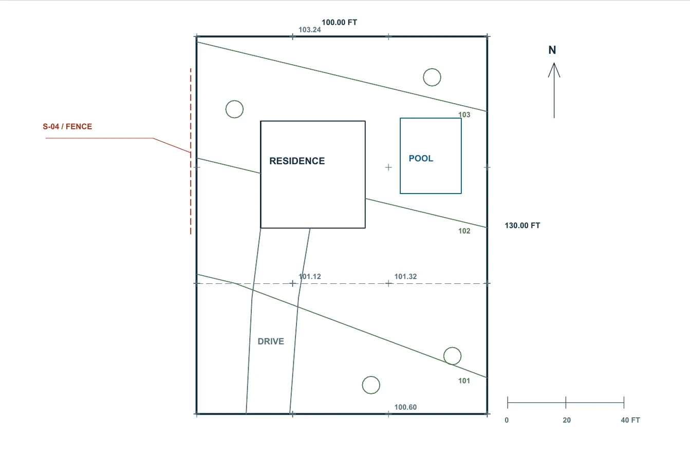

Surveyor-directed boundary drafting
Draw approved boundary geometry and annotate the corners, bearings, distances and easements your surveyor supplies.
Desktop CAD support for licensed survey firms
Send approved field data, surveyor-determined boundary linework and your CAD standards. We draft contours, spot elevations, site features, labels and sheet layouts for your survey lead to review.

Draw approved boundary geometry and annotate the corners, bearings, distances and easements your surveyor supplies.
Plot accepted shots, profiles and contours from your supplied surface or from explicit build instructions and breaklines.
Import accepted points, preserve IDs and elevations, and connect coded features using your layers, blocks and field-code library.
Compare supplied asset shots with prior records. Return point references, coordinate differences and an exception log.
The responsible licensed surveyor directs field capture, decides control and boundary questions, interprets deeds and easements, and approves, certifies or seals the final survey products. We agree on the jurisdiction, supervision and file-handling terms before accepting a batch.
Choose a representative area with a known deliverable and a named reviewer.
Share your state, file inventory, CAD version and reviewer. We’ll agree on a transfer channel before you share restricted records.
info@skarion.com